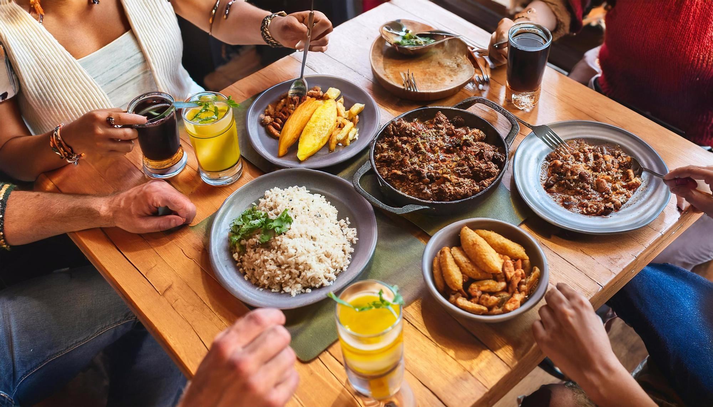
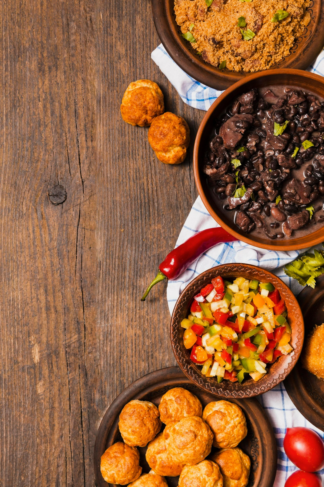
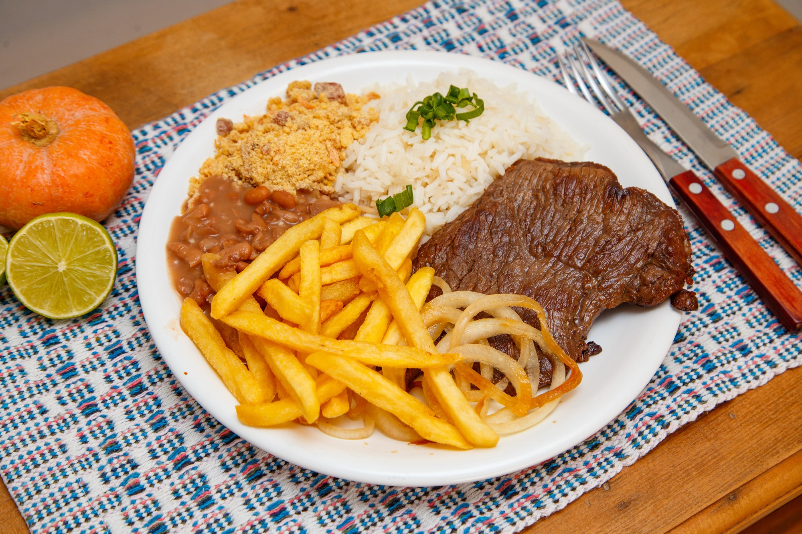
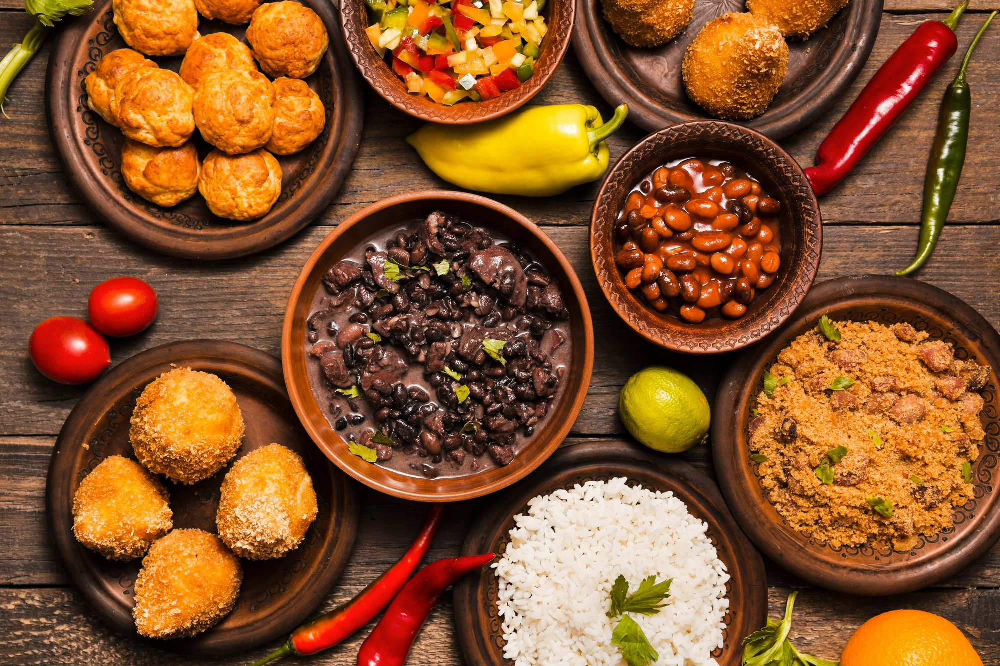

Tem comida de casa
bem pertinho.
Arroz soltinho, feijão, carne feita na hora e uma mesa cheia. Daquele jeito simples que a gente gosta.
...fica fácil passar aqui.
Uma casa simples, comida de verdade e aquele lugar que você pode conhecer sem precisar de ocasião especial.
Como chegar →
Um restaurante simples.
Do jeito que tem que ser.
Aqui a ideia é bem direta: receber bem, colocar comida gostosa na mesa e deixar você à vontade.
É aquele tipo de lugar para vir no almoço, trazer a família, encontrar alguém depois do trabalho ou simplesmente matar a fome.
Comida que você
já conhece.
Sem frescura e sem tentar inventar moda. O bom e velho arroz, feijão, carne, batata, farofa e acompanhamentos.



Chega, escolhe uma mesa
e fica à vontade.
O ambiente é parte da experiência. Madeira, mesa posta, gente conversando e aquele movimento gostoso de uma casa que recebe gente todos os dias.
Quero conhecer o lugar →É só vir.
Colocamos aqui uma localização demonstrativa para mostrar como essa parte pode ficar no site do restaurante.
Rua da Vila, 120
Próximo à região central